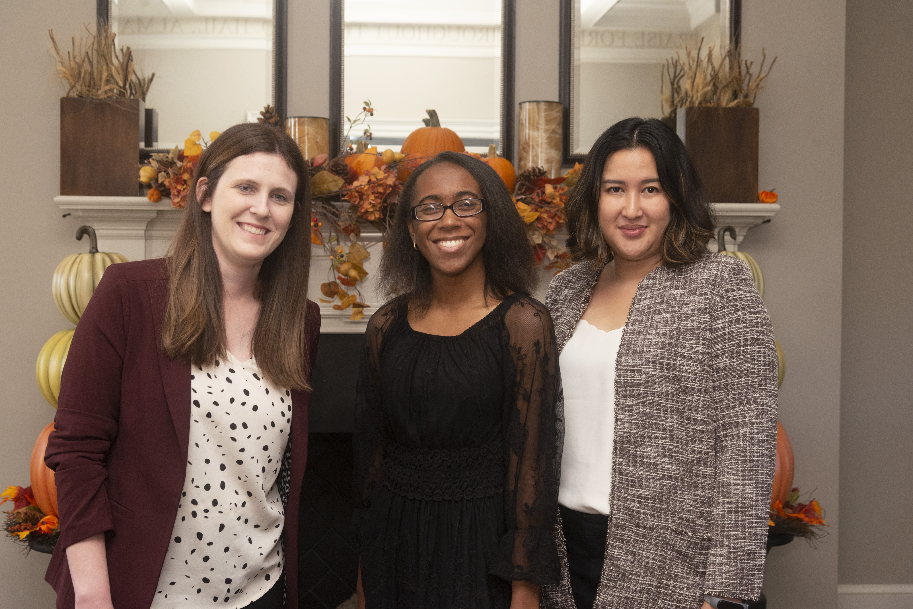
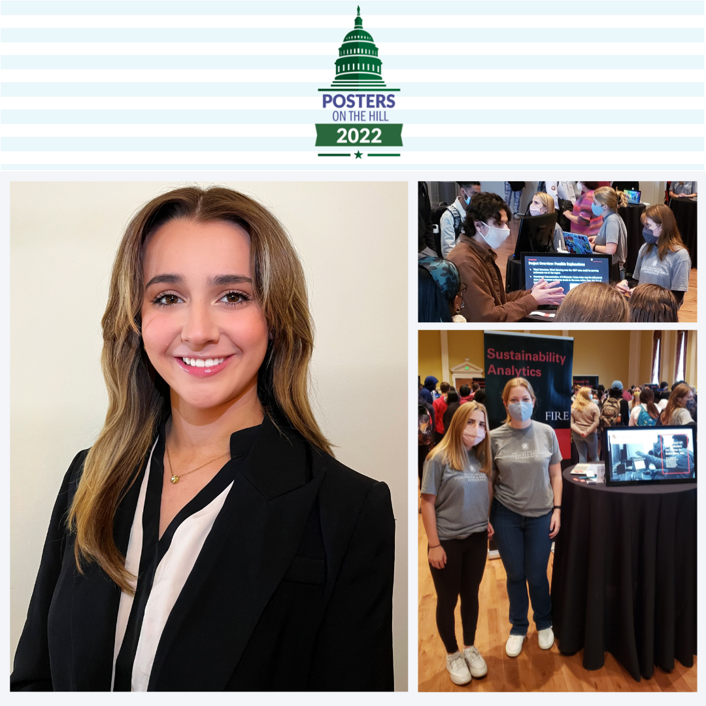

Awards
May 4, 2023
FIRE Sustainability Analytics alumni Janna Chapman was the Expression of Gratitude speaker at UMD AGNR Commencement ceremony.

November 4, 2022
FIRE Sustainability Analytics alumni Janna Chapman has been selected as a Philip Merrill Presidential Scholars for 2021-22. The program honors the University of Maryland’s most successful seniors and their designated University faculty and K-12 teachers for their mentorship. As a result, FIRE Sustainability Analytics Faculty leader, Thanicha Ruangmas, also received an award as her faculty mentor.

October 12, 2022
FIRE Semester 3 student, Geoffrey Zhang, presented his team’s poster at AGNR’s Cornerstone event. He became the 2nd place winner under the event’s theme, “Optimizing Urban Environments.” The project, which looks at the impact of light rails on air pollution, was a result of a collaboration between Summer Interns; Lillian Hsu, Terrence Lo, Jillian Wimbush, and team leader Geoffrey Zhang.


July 22, 2022
PRMs Courtney DeLoatch-Hill, Elenna Mach, and Jillian Wimbush received the “Honorable Mentions” award for the EPA’s Environmental Justice Video Challenge for Students. Watch their YouTube video. They also presented their work at UMD’s Undergraduate Research Day on April 27, 2022.
June 13, 2022
PRMs Courtney DeLoatch-Hill and Jason Mazon received the prestigious Ernest F. Hollings Undergraduate Scholarship.
April 26, 2022
A research project that looks at the impact of air pollution on violent crime, was selected to represent the state of Maryland at the 2022 Posters on the Hill event. Melissa Calabrese presented the research project virtually on behalf of the team, which included Melissa Calabrese, Annika Kuchel, Hannah Marszalek, Nicholas Martino, Zoe McConnell, Maggie Palka, Sambit Sahoo, Ryan Tabouguia, Arianna Thomson, and Anna Wietrecki. The team also presented their research in progress during UMD’s Undergraduate Research Day on April 27, 2022 and the FIRE Summit on November 3, 2021.

January 2021
In May 2020, US Department of Agriculture’s Animal and Plant Health Inspection Service (USDA-APHIS) funded four FIRE Sustainability Analytics students, Janna Chapman, Anna Lazarus-Hall, Shanil Kothari, and Mishti Relan, Summer Fellowships, to work on the project “Using Online Data to Identify Farms Selling Poultry and Eggs in Delaware, Maryland, and Virginia. As a result, the fellows have compiled a database of farms selling poultry and egg products from federal, state, online directories and Google Places. In addition, they created an online application that can provide information about farms within a user-identified radius of a latitude and longitude centroid and a report that outlines methodology, best practices, and results from scraping data from online forums, public registries, Google Places, and Google Trends.
Their work has been featured in the College Post, the Poultry Site, and AGNR MomentUM Magazine.